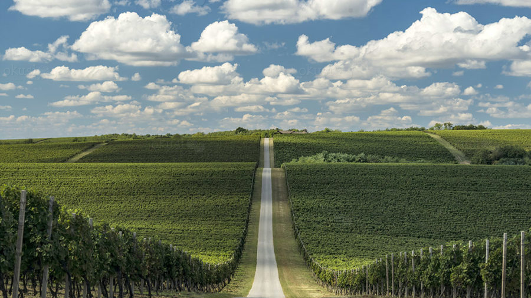

Bordered by the Drava and the Danube rivers and divided by Croatian-Hungarian state border, in the east charmed by a swamp, in the south and southeast sheltered by mouths of the river and in the north and northeast open for connection via wine roads and paths – Baranja is even today quite closed, almost secluded, more mystical than ever before. Despite old bridges having been renovated and new ones being built, regardless of the fact that it is dappled with several international road routes and that it is becoming an ever more interesting tourist destination – at this day Baranja manages to preserve a unique note since its people jealously keep their existential secrets. They strongly and clearly remember the tales older than their own families, secrets of life and survival, of love and dying, wines, hot peppers, special kind of fishing, weddings, buše (traditional masks from Baranja), pudarine (guarding ripening grapes), paunići (embroidered motifs of small peacocks on traditional folk costumes), slamnjače (straw beds) and i kandile (hanging candles). Owing to this still existent ethnographic magic which can be read from the faces of people living outside main roads, Baranja is capable of attracting, yet never revealing itself to the fullest.

Baranjsko Petrovo Selo
Beli Manastir
Bilje
Čeminac
Darda
Draž
Jagodnjak
Karanac
Kneževi Vinogradi (Prince's Vineyards)
Petlovac
Popovac
Suza
Zmajevac